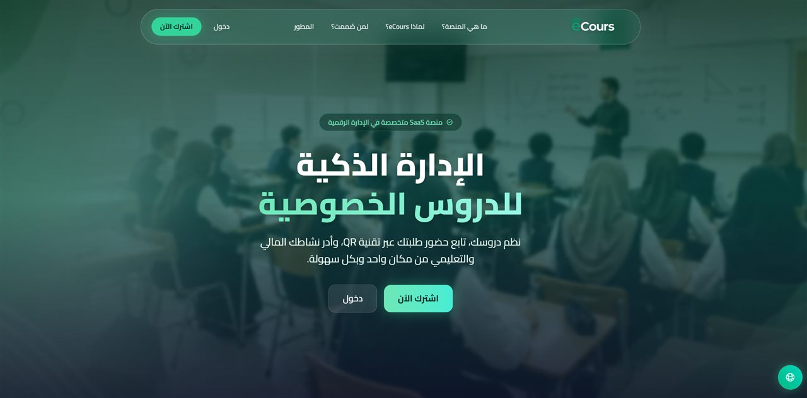
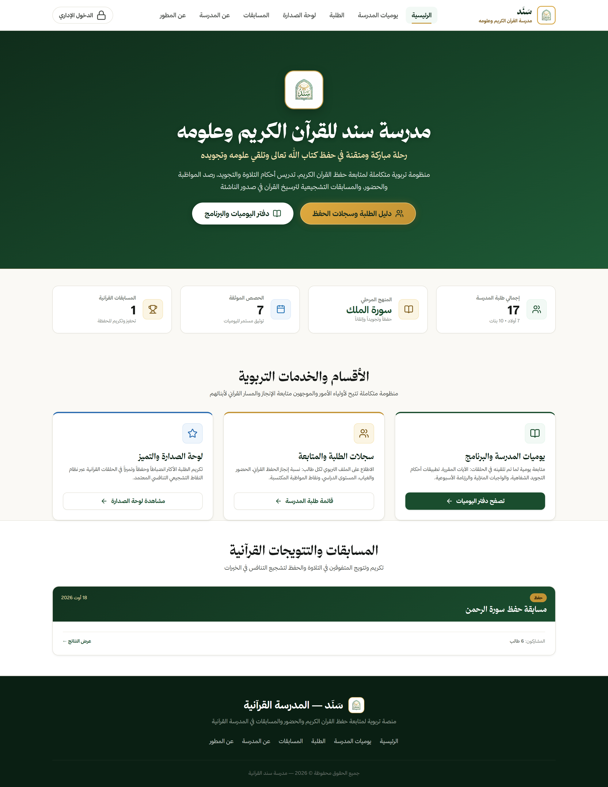
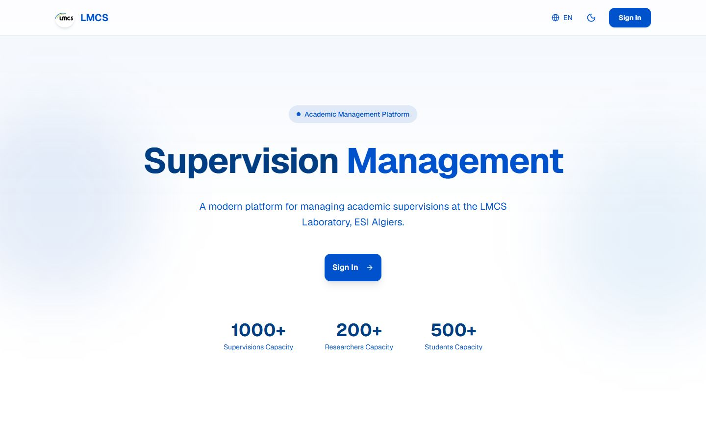
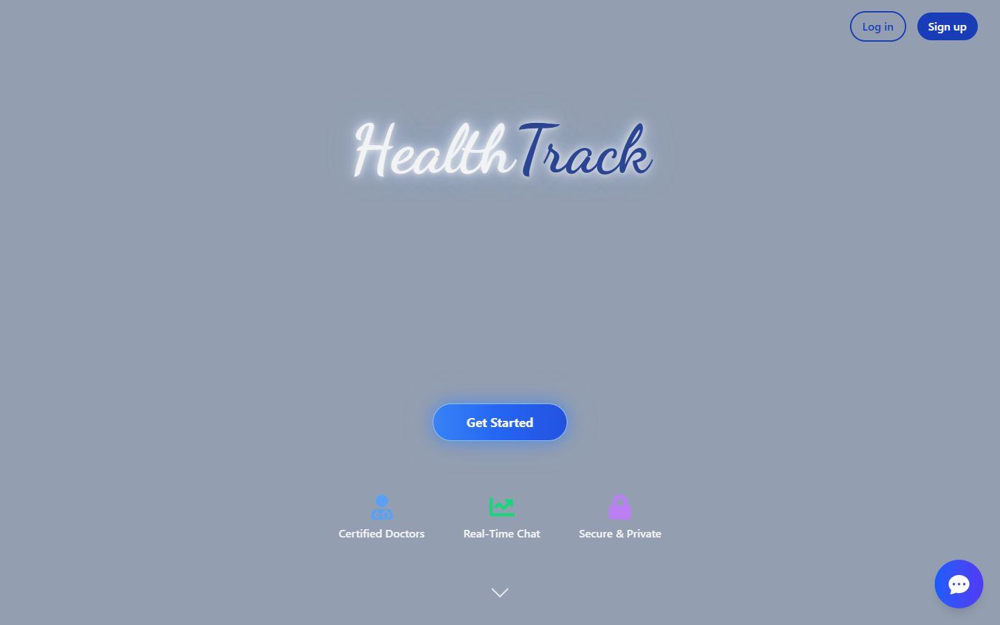

الحضور والأفواج والمستحقات وتقارير المركز في مكان واحد — مع أمان على مستوى الصفوف في Postgres يتولى الصلاحيات.
Next.js 16 · React 19 · TypeScript · Supabase · RLSلا أبني الواجهات فقط. أهندس منتجات رقمية كاملة.
طالب هندسة إعلام آلي في المدرسة العليا للإعلام الآلي بالجزائر. TypeScript وReact وNext.js في الواجهة، وNode.js وSupabase وPostgreSQL في الخلفية.
أربعة أنظمة من نموذج البيانات إلى الواجهة — ثلاثة منتجات منشورة واستكشاف تصميمي واحد يحافظ على حدة التفكير المنتجي.

الحضور والأفواج والمستحقات وتقارير المركز في مكان واحد — مع أمان على مستوى الصفوف في Postgres يتولى الصلاحيات.
Next.js 16 · React 19 · TypeScript · Supabase · RLS
منصة عربية أولاً تستبدل الدفاتر الورقية بالحضور ومتابعة الحفظ والنقاط ولوحات الترتيب العامة.
Vite · Vanilla JS · Supabase · Netlify Blobs
نظام إدارة الإشراف الأكاديمي لمخبر LMCS، مبني حول ثلاثة أدوار باحتياجات بيانات مختلفة.
Product design · Design system · Next.js · Supabase
مسار حجز يختصر البحث عن الطبيب وحجز الموعد إلى ثلاث خطوات واضحة — بُني كنموذج React تفاعلي.
React · UI/UX · Prototypeقرارات المنتج تلتقي بقيود الهندسة — هذا هو الجزء الذي يهمني في البرمجيات.
أصمّم النظام، ثم أبنيه — من المخطط وحدود الـAPI إلى آخر تفاعل.
أنا طارق، طالب هندسة إعلام آلي في المدرسة العليا للإعلام الآلي بالجزائر ومطوّر متكامل. أحبّ الجزء الذي تلتقي فيه قرارات المنتج بقيود الهندسة: كيف يشكّل نموذج البيانات سير العمل، وكيف تؤثر حدود الـAPI على الواجهة، وكيف يحذف تفاعل صغير فئة كاملة من تذاكر الدعم.
مجموعة مركزة أستطيع الدفاع عنها — لا قائمة بكل ما فتحته مرة.
الحياة الطلابية في ESI كانت بقدر ما هي عن الفرق والتسليم بقدر ما هي عن الكود.
نادي Shellmates · ESI الجزائر
تمثيل النادي السيبراني في ESI أمام الشركاء والمتحدثين والشركات، وتنسيق التواصل الخارجي حول فعاليات النادي.
eCours · سند / خيركم · LMCS · HealthTrack
أخذ المنتجات من المتطلبات ونماذج البيانات إلى الواجهات والنشر — غالباً وحدي، ودائماً والمستخدم النهائي حاضر.
ESI الجزائر · المدرسة العليا للإعلام الآلي
دراسات هندسية تركز على أساسيات الإعلام الآلي والخوارزميات وأنظمة البرمجيات والمشاريع التطبيقية.
متاح للتدريب والأدوار المبتدئة والتعاون حيث تستحق المشكلة حلاً صحيحاً. البريد أسرع وسيلة للوصول إليّ.